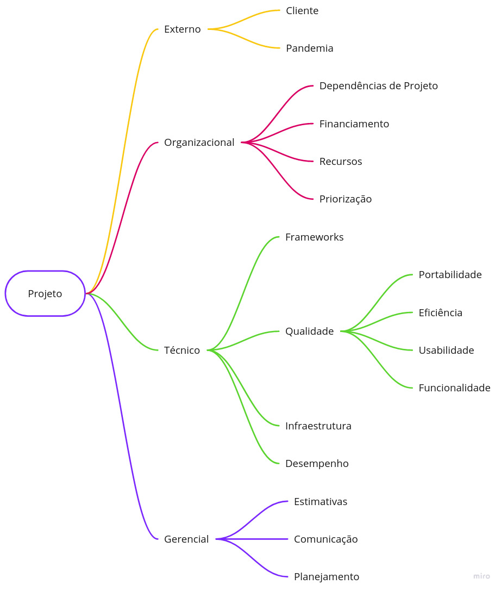

Termo de Abertura de Projeto (TAP)
1. Versionamento
| Versão | Data | Modificação | Autor |
|---|---|---|---|
| 1.0 | 30/01/2022 | Criação do documento | João Pedro Moura |
| 1.1 | 30/01/2022 | Adição dos riscos | João Pedro Moura |
| 1.2 | 31/01/2022 | Adição dos custos | João Pedro Moura |
| 1.3 | 03/02/2022 | Linkagem léxicos | Thiago |
2. Introdução
Esse documento tem como principal objetivo formalizar o início do projeto informando os estudos de viabilidade, prazos e entregas, orçamentos, objetivos e os riscos para a construção de todos os documentos e softwares desse programa.
3. Objetivos
O objetivo principal é construir um aplicativo que um produtor possa estar utilizando para realizar a confecção de sua cardeneta de campo de um talhão de sua propriedade, através da ajuda pelo envio de fotos, e análise/verificação de um técnico sobre o artefato construído, de forma intuitiva, simples e rápida.
4. Justificativa
O registro e venda de produtos agrícolas exige um mapeamento preciso e bem feito, de forma que uma cultura possa ser facilmente rastreável, e caso ocorram problemas, seja de fácil descobrimento a sua causa. Entretanto, é necessário um nível de conhecimento de leitura e escrita para a confecção de uma cardeneta de campo de acordo com os padrões exigidos.
Por esse motivo, surge o papel importante dos técnicos em ajudar e validar o preenchimento desse artefato pelos produtores. Entretanto, muitas vezes essa comunicação entre as partes e o preenchimento da caderneta acontecem de formas muito manuais e via whatsapp, portanto, surge a premíssia principal desse projeto em se criar uma plataforma de fácil utilização tanto para produtores como para técnicos no preenchimento da sua cardeneta de campo.
5. Prazos e Entregas
A entrega desse produto será feita em partes e conforme o que foi definido no plano de ensino da matéria de Arquitetura e Desenho de Software da professora Milene, a seguir se encontram os principais marcos da evolução desse projeto:
| Entrega | Estimativa de Entrega |
|---|---|
| Base | 04/02/2022 |
| Modelagem | 21/02/2022 |
| Padrões de Projeto | 21/03/2022 |
| Reutilização de Software | 18/04/2022 |
Tabela 1: Tabela de prazos e entregas.
Fonte: Autor.
6. Riscos
Dentro da gerência de um projeto de software, um dos pontos essenciais é realizar a gestão de riscos do produto. Com esse controle, é possível a equipe entender, listar, acompanhar, controlar, previnir e medir os impactos de cada risco dentro de todos os ciclos de vida do software que está sendo construído. Com essa medição, é possível focalizar nos riscos com uma maior prioridade - não ignorando aqueles com prioridade inferior - e tomar medidas para previnir seus acontecimentos [1].
6.1 Estrutura Analítica de Riscos (EAR)
Uma das ferramentas utilizadas para gerir os riscos desse projeto é a Estrutura Analítica de Riscos (EAR), que corresponde a uma ferramenta de agrupamento e organização dos riscos em categorias [2], a seguir é possível visualizar essa categorização de forma visual para o projeto:

Figura 1: Estrutura Analítica de Riscos.
Fonte: Autor, baseado no projeto Curumim [3].
6.1.1 Externo
- Cliente: Diz respeito ao critério de aceitação dos clientes desde etapas inicias de elicitação de requisitos até a utilização diária da aplicação.
- Pandemia: Diz respeito à atual situação do mundo, com a pandemia do Covid-19 e da nova gripe H3N2.
6.1.2 Organizacional
- Dependências de Projeto: Se refere à possíveis riscos advindo de depêndencias utilizadas dentro do projeto, sendo aplicável também aos riscos técnicos.
- Financiamento: Referente à riscos em relação aos custos do projeto e possíveis financiamentos de interessados.
- Recursos: Similar aos riscos de financiamento e também diretamente ligado aos custos do projeto.
- Priorização: Riscos influenciados pelo cliente e possíveis priorizações equivocadas dos requisitos.
6.1.3 Técnico
- Framework: Diz respeito à riscos de software em relação à frameworks utilizados.
- Qualidade: Referente a modelagem FURPS+ dos requisitos dentro de todo o escopo do projeto e sua utilização.
- Infraestrutura: Riscos advindos de plataformas que fornecem serviços de hospedagem.
- Desempenho: Diretamente relacionados à velocidade e eficiência da aplicação construída.
6.1.4 Gerencial
- Estimativas: Riscos relacionados aos prazos de entregas e estimativas.
- Comunicação: Diz respeito à comunicação entre membros de equipe.
- Planejamento: Referentes aos riscos de um planejamento mal feito ou equivocado.
6.2 Strength, Weakness, Opportunity, and Threat (SWOT)
Framework de gerência de riscos usado para avaliação competitiva e planejamento estratégico. Essa análise, busca projetar uma visão realista baseada em fatos e orientada por dados dos pontos fortes e fracos de uma organização [4].
| Forças | Comprometimento da equipe, experiências prévias dentros dos frameworks escolhidos, comunicação eficaz entre membros. |
| Fraquezas | Falta de conhecimento, atraso de entregas indivudais. |
| Oportunidades | Possibilidade de continuidade do projeto, capacitação em novas linguagens/frameworks, aquisição de conhecimentos em novas áreas do desenvolvimento de softwares. |
| Ameaças | Greves da faculdade, doenças. |
Tabela 2: Tabela SWOT.
Fonte: Autor.
6.3 Análise Quantitativa de Riscos
Partindo agora para uma análise dos riscos através de dados mensuráveis e numéricos, a equipe optou por utilizar a Análise Quantitativa de Riscos [5]. Para realizar esse levantamento, utilizou-se a matriz de probabilidade e impacto que especifica as possíveis combinações e permite uma classificação dos riscos de acordo com uma prioridade. A seguir se encontram as tabelas:
6.3.1 Probabilidade
| Peso | Atributo | Probabilidade |
|---|---|---|
| 5 | Esperado | 81 ~ 100% |
| 4 | Muito Provável | 61 ~ 80% |
| 3 | Provável | 41 ~ 60% |
| 2 | Pouco Provável | 21 ~ 40% |
| 1 | Quase Nulo | 0 ~ 20% |
Tabela 3: Tabela de probabilidades.
Fonte: Autor.
6.3.2 Impacto
| Peso | Impacto | Descrição |
|---|---|---|
| 5 | Alto | Impossibilita a continuação do projeto |
| 4 | Elevado | Alto impacto no andamento do projeto |
| 3 | Moderado | Afeta o projeto, mas tem solução |
| 2 | Baixo | Influência baixa dentro do projeto |
| 1 | Limitado | Impacto quase nulo |
Tabela 4: Tabela de impacto.
Fonte: Autor.
6.3.3 Prioridade (Probabilidade x Impacto)
| P/I | Limitado | Baixo | Moderado | Elevado | Alto |
|---|---|---|---|---|---|
| Quase Nulo | 1 | 2 | 3 | 4 | 5 |
| Pouco Provável | 2 | 4 | 6 | 8 | 10 |
| Provável | 3 | 6 | 9 | 12 | 15 |
| Muito Provável | 4 | 8 | 12 | 16 | 20 |
| Esperado | 5 | 10 | 15 | 20 | 25 |
Tabela 5: Tabela de prioridade.
Fonte: Autor.
6.3.4 Riscos Identificados
6.3.4.1 Riscos Externos
| Risco | Impacto | Probabilidade | Prevenção | Resposta | Prioridade |
|---|---|---|---|---|---|
| Desistência do cliente | Elevado | Pouco Provável | Sempre estar em sincronia com os desejos do cliente e com o que está sendo produzido | Buscar novo cliente com ideias similares e adaptar o projeto | 8 |
| Indisponibilidade de um integrante por doença | Moderado | Provável | Buscar sempre atender as prevenções para o Covid-19 e a nova gripe H3N2 | Alocação de membros para as issues que ficarem desfalcadas e revisão e adaptação do escopo do projeto | 9 |
Tabela 6: Tabela de riscos externos.
Fonte: Autor.
6.3.4.2 Riscos Organizacionais
| Risco | Impacto | Probabilidade | Prevenção | Resposta | Prioridade |
|---|---|---|---|---|---|
| Desistência de integrante da matéria | Alto | Pouco Provável | Manter motivação dos membros sempre alta e uma boa gerência de equipe | Realocação das issues para os membros restantes e revisão e adaptação do escopo do projeto | 10 |
| Priorização equivocada de requisitos | Elevado | Pouco Provável | Realizar uma elicitação e priorização condizente com as necessidades dos clientes | Realizar nova elicitação e priorização de requisitos | 8 |
| Falta de recursos e financiamento | Limitado | Quase Nulo | Buscar atender as necessidades do cliente para que se mantenham os financiamentos | Por se tratar de um projeto open source para uma disciplina, não será procurado novas fontes de financiamento | 1 |
Tabela 7: Tabela de riscos organizacionais.
Fonte: Autor.
6.3.4.3 Riscos Técnicos
| Risco | Impacto | Probabilidade | Prevenção | Resposta | Prioridade |
|---|---|---|---|---|---|
| Dificuldades com as tecnologias utilizadas | Moderado | Pouco Provável | Treinamentos e pareamentos | Buscar treinamentos e troca de conhecimentos na equipe | 6 |
| Falhas na infraestrutura do sistema | Alto | Provável | Utilização de boas plataformas de hospedagens para a infraestrutura do projeto | Alterar a plataforma responsável pela hospedagem do projeto | 15 |
| Baixo desempenho da aplicação | Alto | Provável | Criação/utilização de programas eficientes | Procurar novas implementações mais eficientes para determinado problema | 15 |
| Descontinuidade de Frameworks | Alto | Quase Nulo | Utilização de frameworks famosos e em constante desenvolvimento | Alteração de framework e em casos extremos da linguagem de programação | 5 |
Tabela 8: Tabela de riscos técnicos.
Fonte: Autor.
6.3.4.4 Riscos Gerenciais
| Risco | Impacto | Probabilidade | Prevenção | Resposta | Prioridade |
|---|---|---|---|---|---|
| Falta de planejamento | Alto | Pouco Provável | Planejar bem sempre previamente às entregas | Buscar alcançar um replanejamento para o tempo restante | 10 |
| Falhas de comunicação entre a equipe | Elevado | Quase Nulo | Utilizar formas de engajar e aumentar a comunicação entre a equipe | Alocar issues em pares e usar atividades de engajamento | 4 |
| Falta de atenção nas datas de entrega | Alto | Quase Nulo | Sempre estar preparado previamente e ler o plano de ensino da matéria | Realocar membros para realizar as tarefas restantes | 5 |
Tabela 9: Tabela de riscos gerenciais.
Fonte: Autor.
7. Custos
7.1 Introdução
Além dos riscos, a gerência de custos de um projeto de software é um outro ponto muito importante em todo o ciclo de vida do mesmo. Apesar de sua importância, essa medição tende a ser problemática visto que não existe um consenso sobre qual técnica ou modelo utilizar, alguns pesquisadores defendem a contagem por pontos de função, já outros afirmam que a utilização de linhas de código em um software é mais eficiente (CORRÊA, 2002) [5].
De acordo com as pesquisas de Capers Jones, é indicado que as técnicas de estimativas formais são capazes de dobrar a probabilidade de um projeto de software ser concluido com sucesso, ressaltando a importância dessa gerência para o ciclo de vida do software. Hazan (2001), Calvert (1996) e Rezende (1999), ainda citam algumas razões principais para realizar essa medição, são elas:
- Formar uma baseline para estimativas;
- Verificar se as metas de produtividade e qualidade estão sendo atingidas;
- Avaliar as vantagens do uso de novos métodos e ferramentas de engenharia de software;
- Melhorar o relacionamento com o cliente;
- Ajudar na justificativa de pedidos de treinamento e aquisição de novas ferramentas;
- Melhorar a gerência de contratos de software;
- Reduzir o risco do estabelecimento de um cronograma inviável;
- Melhorar a gerência de projetos de desenvolvimento de software;
7.2 COCOMO
Para realizar essa medição e gerência de riscos do projeto, a equipe optou por estar utilizando o modelo algorítmico COnstructive COst MOdel (COCOMO), desenvolvido por Barry Boehm (1981). Dentro desse modelo, ainda foi apresentado três possíveis implementações de acordo com o tipo de software desenvolvido e o grau de confiabilidade esperado, são eles:
- COCOMO Básico: realiza a medição do esforço e custo de desenvolvimento baseado em uma estimativa de tamanho do programa (linhas de código).
- COCOMO Intermediário: por sua vez o intermediário, além de utilizar essa estimativa de tamanho do programa faz o uso de um conjunto de direcionadores de custos, como: avaliações subjetivas do produto, do hardware, do pessoal e dos atributos do projeto.
- COCOMO Detalhado: utiliza todas as métricas do COCOMO intermediário mais uma avaliação do impacto dos direcionadores de custos dentro de cada etapa do ciclo de vida do software.
Além disso, o COCOMO ainda se divide em três classes de projeto distintos [5], são eles:
- Modo Orgânico: Projetos simples, com equipes pequenas e experientes e sem um conjunto muito rígido de requisitos.
- Modo Semidestacado: Projetos de tamanho e complexidade intermediários, já com alguns requisitos rígidos e outros não tão rígidos e com uma equipe de níveis mistos de experiência.
- Modo Embutido: Projetos com conjuntos rígidos de restrições tando de software como de hardware.
Portanto, após discussões o modelo escolhido foi o COCOMO Intermediário Semidestacado com enfoque nos seguintes atributos definidos por Boehm (1981):
- Atributos de Produto
- Confiabilidade exigida do software;
- Complexidade do produto;
- Atributos de Pessoal
- Capacidade do programador;
- Experiência com a linguagem de programação;
- Atributos de Projeto
- Uso de práticas modernas de programação;
- Uso de ferramentas de software;
- Cronograma exigido de desenvolvimento;
7.3 Tabela de Coeficientes
Para suprir as necessidades do COCOMO e calcular a estimativa de esforço e tempo, utilizou-se uma matriz composta do COCOMO intermediário para os atributos "a" e "b" e para os atributos "c" e "d" aproveitou-se os valores referentes da tabela do COCOMO básico, disponibilizados por Boehm (1981).
| Projeto de Software | a | b | c | d |
|---|---|---|---|---|
| Orgânico | 3,20 | 1,05 | 2,50 | 0,38 |
| Semidestacado | 3,00 | 1,12 | 2,50 | 0,35 |
| Embutido | 2,80 | 1,20 | 2,50 | 0,32 |
Tabela 10: Tabela de coeficientes.
Fonte: Boehm (1981).
7.4 Multiplicadores de Esforço
| Direcionadores de Custo | Muito Baixo | Baixo | Normal | Elevado | Muito Elevado | Extremamente Elevado |
| Atributos de Produto | ||||||
| Confiabilidade exigida do software | 0,75 | 0,88 | 1,00 | 1,15 | 1,40 | - |
| Complexidade do produto | 0,70 | 0,85 | 1,00 | 1,15 | 1,30 | 1,65 |
| Atributos de Pessoal | ||||||
| Capacidade do programador | 1,42 | 1,17 | 1,00 | 0,86 | 0,70 | - |
| Experiência com a linguagem de programação | 1,14 | 1,07 | 1,00 | 0,95 | - | - |
| Atributos de Projeto | ||||||
| Uso de práticas modernas de programação | 1,24 | 1,10 | 1,00 | 0,91 | 0,82 | - |
| Uso de ferramentas de software | 1,24 | 1,10 | 1,00 | 0,91 | 0,83 | - |
| Cronograma exigido de desenvolvimento | 1,23 | 1,08 | 1,00 | 1,04 | 1,10 | - |
Tabela 11: Tabela de multiplicadores de esforço.
Fonte: Boehm (1981).
7.5 Cálculo da Estimativa de Esforço
Seguindo, portanto, a modelagem do COCOMO parte-se agora para o cálculo da estimativa de esforço. Pelas características do projeto e pelo modo intermediário ter sido escolhido para o desenvolvimento desses software, Boehm (1981) define a seguinte equação:
Onde:
- E: é o esforço aplicado (em pessoas-mês).
- S: é o número (estimado) de linhas de código para o projeto (em milhares).
- a: é um coeficiente fornecido pela Tabela 10.
- b: é um expoente fornecido pela Tabela 10.
- fae: é o Fator de Ajustamento do Esforço (multiplicação de cada um dos Multiplicadores de Esforço fornecidos pela Tabela 11).
Portanto, de acordo com as decisões da equipe em relação aos multiplicadores de esforço, o fae equivale à:
Em equipe, o grupo decidiu utilizar uma estimativa de cerca de 2000 linhas de código equivalente à 2Kloc. Aplicando na equação obtemos:
7.6 Cálculo da Estimativa de Custo
Por fim, o grupo optou por utilizar o cálculo da estimativa de custo disponível pelo COCOMO básico, definida pela seguinte equação conforme Boehm (1981):
Dessa forma, utilizando os valores de "c" e "d" da tabela 10 junto com a estimativa de esforço, obtemos o seguinte resultado:
8. Referências
[1] Gerenciando os riscos do projeto com a matriz de probabilidade e impacto. Disponível em: https://danielettinger.com/2011/06/14/gerenciando-os-riscos-do-projeto-com-a-matriz-de-probabilidade-e-impacto/. Acesso em: 30 de jan. de 2022.
[2] Gerenciando os riscos do projeto com a matriz de probabilidade e impacto. Disponível em: https://glicfas.com.br/estrutura-analitica-de-riscos-2/. Acesso em: 30 de jan. de 2022. [3] Termo de Abertura de Projeto, Projeto Curumin. Disponível em: https://unbarqdsw2021-1.github.io/2021.1_G6_Curumim/base/tap/tap/#introducao. Acesso em: 30 de jan. de 2022. [4] Strength, Weakness, Opportunity, and Threat (SWOT) Analysis, Investopedia. Disponível em: https://www.investopedia.com/terms/s/swot.asp. Acesso em: 30 de jan. de 2022. [5] Modelos para estimar custos de software: estudo comparativo com softwares de pequeno porte. CORRÊA, M., M. (2002).